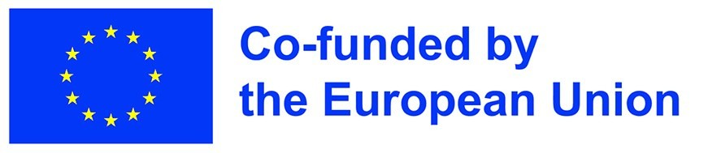
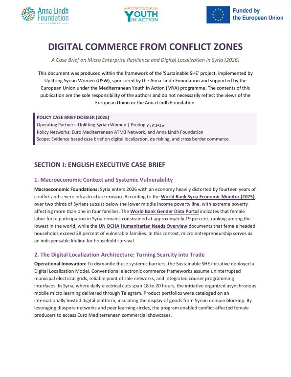
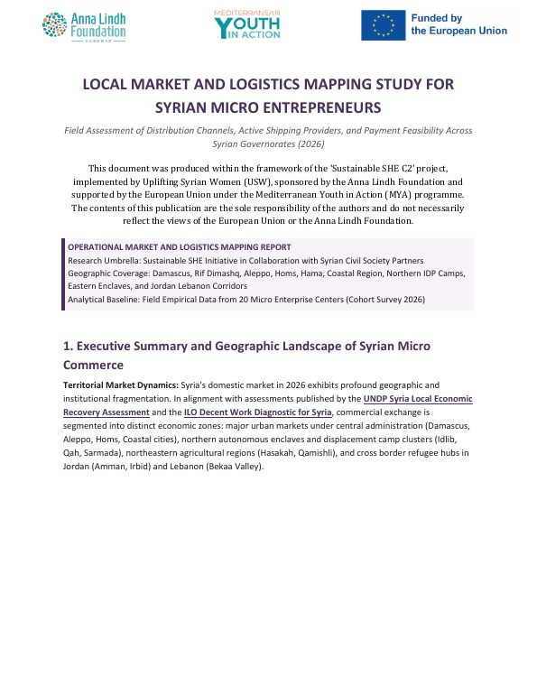

These documents were produced within the framework of the Sustainable SHE project, implemented by Uplifting Syrian Women (USW), sponsored by the Anna Lindh Foundation and supported by the European Union under the Mediterranean Youth in Action (MYA) programme. The contents of these publications are the sole responsibility of the authors and do not necessarily reflect the views of the European Union or the Anna Lindh Foundation.أُعدّت هذه الوثائق ضمن مشروع Sustainable SHE المنفَّذ عبر مبادرة دعم المرأة السورية، برعاية مؤسسة آنا ليند وبدعم من الاتحاد الأوروبي ضمن برنامج شباب المتوسط في الفعل (MYA). محتويات هذه المطبوعات هي مسؤولية القائمين عليها حصراً، ولا تعكس بالضرورة وجهة نظر الاتحاد الأوروبي أو مؤسسة آنا ليند.

Digital Commerce from Conflict Zonesالتجارة الرقمية من مناطق النزاع
A Case Brief on Micro Enterprise Resilience and Digital Localization in Syria (2026)بناء الصمود التجاري ونموذج التوطين الرقمي لرائدات الأعمال المعيلات في سوريا لعام 2026
An evidence based case brief on digital localization, de risking, and cross border commerce for micro enterprises in Syria.ملخص دراسة حالة قائم على الأدلة حول التوطين الرقمي وتجنّب المخاطر والتجارة عبر الحدود للمشاريع متناهية الصغر في سوريا.

Local Market and Logistics Mapping Study for Syrian Micro Entrepreneursدراسة مسح السوق المحلي وسلاسل التوزيع واللوجستيات لرائدات الأعمال في سوريا
Field Assessment of Distribution Channels, Active Shipping Providers, and Payment Feasibility Across Syrian Governorates (2026)تقرير تحليلي شامل لقنوات التوزيع المحلية، وشركات الشحن النشطة، وجدوى آليات الدفع المالي
A field assessment of distribution channels, active shipping providers, and payment feasibility across Syrian governorates.تقييم ميداني لقنوات التوزيع وشركات الشحن النشطة وجدوى الدفع عبر المحافظات السورية.